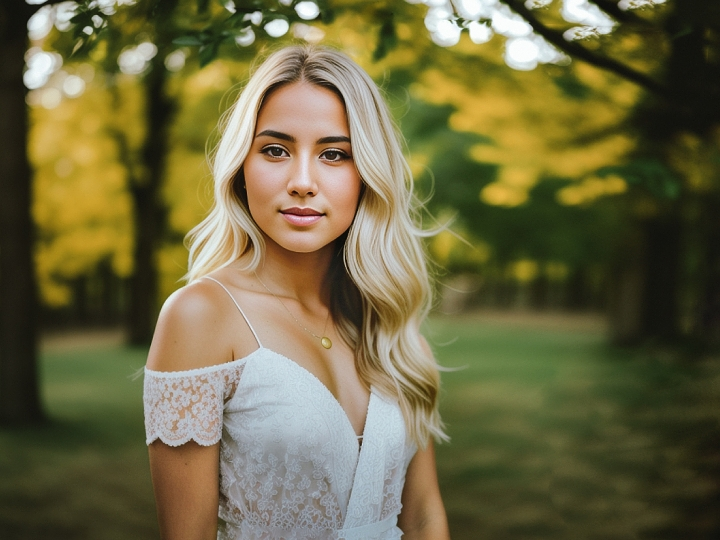
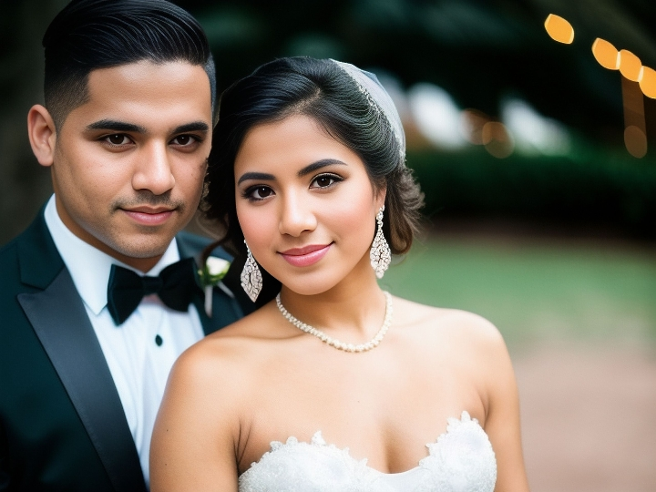
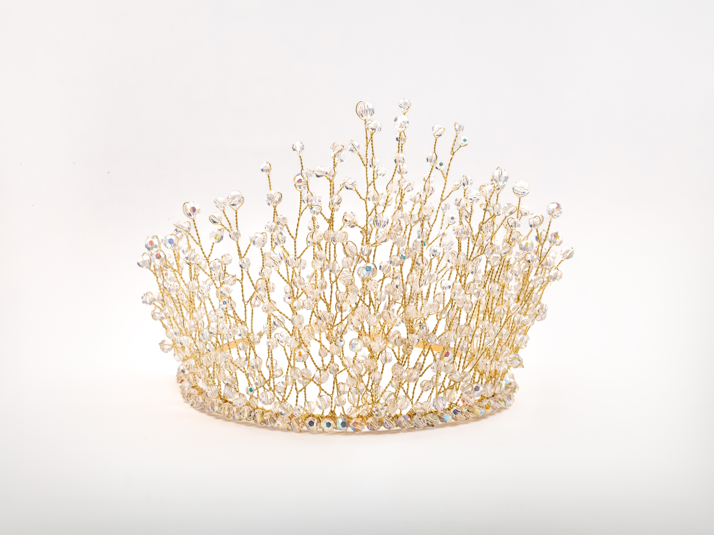
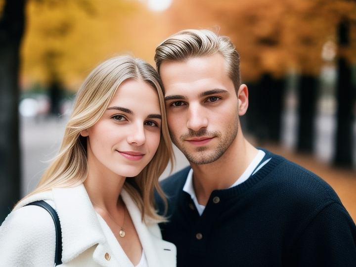
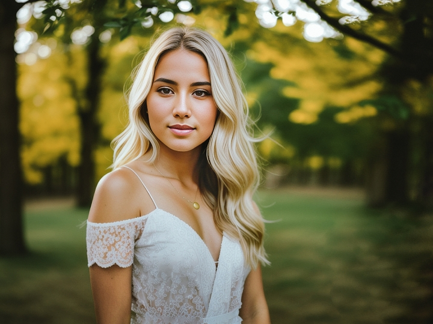
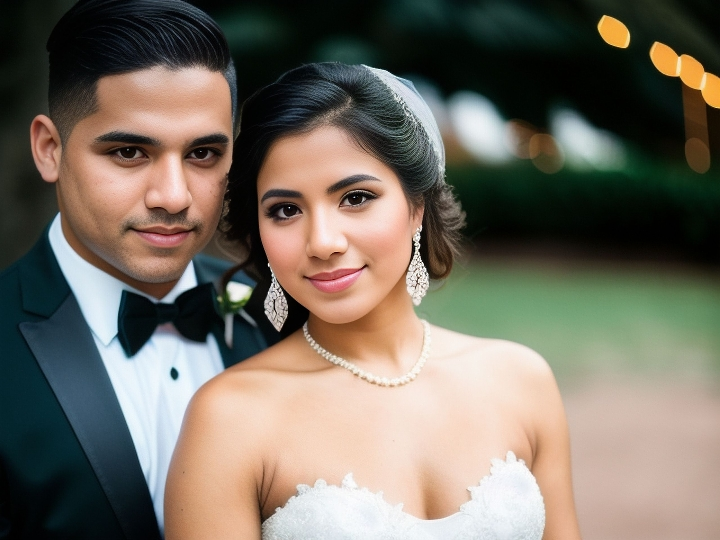
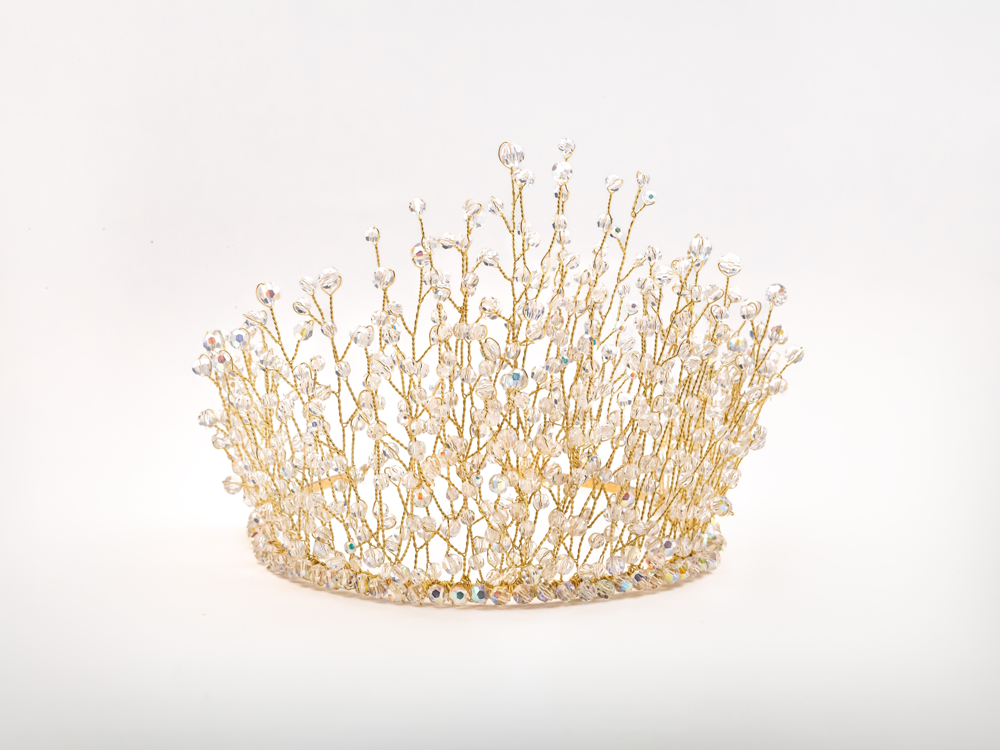
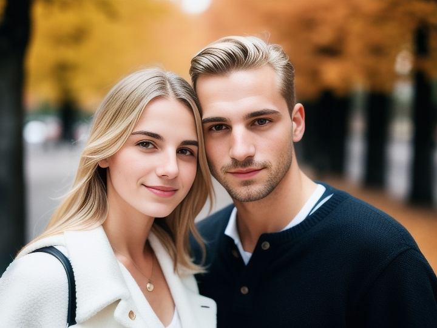

Drahá Natálko, chtěla bych Vám poděkovat za skvělé fotografie našich milovaných kočiček. Byla jsem nadšená Vaším profesionálním přístupem a způsobem, jakým jste se o ně postarala. Natálka nám pořídila nezapomenutelné fotografie, které jsou klenotem našeho domova. Její profesionální přístup, trpělivost a cit pro detail se na každé fotografii projevuje a my jsme rádi, že jsme měli tu čest spolupracovat s tak vynikající fotografkou. Ještě jednou děkuji za Vaši práci a budu Vás rozhodně doporučovat dál 🥰🐈
Focení s Naty bylo neuvěřitelně radostné a zábavné! Navštívili jsme její nový ateliér a byli jsme ohromeni jeho krásným designem a vynikajícími zákoutími pro focení. Atmosféra byla velmi přátelská a uvolněná, což nám umožnilo být přirození a vychutnat si celý proces. A co se týče výsledných fotografií, nemohli jsme být spokojenější! Naty má skvělé oko pro detaily a dokáže zachytit naši osobnost a přirozenost v každé záběru. Její práce je opravdu v topu a nemohli jsme být šťastnější s výsledky 🙏 Můžeme Naty jenom vřele doporučit každému, kdo hledá kvalitního a profesionálního fotografa, který dokáže zachytit ty nejlepší momenty. Je to radost spolupracovat s ní a těšíme se na další příležitost, kdy se s ní budeme moci znovu setkat! ❤️
Fotokurz s Natálií byl úžasný! Natálie byla velmi trpělivá a ochotná nám vysvětlit různé techniky a triky. Navíc jsme se naučili pracovat s novým vybavením, což bylo skvělé. Velmi doporučuji Natálii jako lektorku! Její vášeň pro fotografii a zároveň profesionalita jsou úžasné. Díky ní se mi podařilo zlepšit své schopnosti a posunout se na další úroveň. Určitě se těším na další příležitost, abych mohl s Natálií opět spolupracovat ❤️
Natálie nám zachytila krásné rodinné fotografie. I když to bylo mírně chaotické a naše děti byly trochu neklidné, Natálie se s nimi dokázala vypořádat a přesvědčit je, aby se podívali do kamery. Byla velmi trpělivá a ochotná nám poradit, jak lépe zvládnout focení s dětmi. Navíc jsme se s ní skvěle bavili a vytvořili jsme si přátelskou atmosféru. Jediné, co bychom mohli vytknout je, že jsme očekávali rychlejší dodání fotek, ale nakonec to stálo za to. Výsledné fotky jsou skvělé a budou nám připomínat tento okamžik navždy. Doporučuji Natálii jako skvělého fotografa, který dokáže zachytit kouzlo rodinných okamžiků.
Rád bych podělil o mé pozitivní zkušenosti s Natálií, s kterou jsme s kolegy spolupracovali na tvorbě produktových fotografií pro naši firmu Glamour Goods. Ukázala nám svou schopnost zachytit naše produkty v nejlepším světle, a to díky svému profesionálnímu přístupu a pečlivému práci s detaily. Její kreativní nápady a schopnost poradit s výběrem pozadí a osvětlení nám pomohly dosáhnout skvělých výsledků. Díky naší spolupráci s Natálií jsme zaznamenali zlepšení v prodejích a náš brand se díky kvalitním fotografiím stává stále více viditelným na trhu. Rádi bychom vřele doporučili Natálii pro jakoukoli práci s fotografiemi, nejen pro tuproduktovou. Je pro nás ctí spolupracovat s takovým profesionálem jako je Natálie a jsme si jisti, že naše spolupráce bude pokračovat i v budoucnu.
Jsme naprosto nadšení z našich svatebních fotek, které nám pořídila Natálie. Její profesionalita a zároveň lidský přístup nám umožnil zapomenout na stres a plně se soustředit na jeden z nejdůležitějších dnů v našem životě. Natálie byla velmi trpělivá a ochotná nám vysvětlit, jak lépe zvládnout focení a jak se postavit do správného úhlu. Výsledné fotky jsou prostě ohromující a dokážou přenést krásu celého dne. Jsme Natálii velmi vděční za to, že nám zachytila ty nejkrásnější okamžiky naší svatby a budeme si je pamatovat navždy. Pokud hledáte kvalitního fotografa na vaši svatbu, rozhodně doporučujeme.
Musím říct, že focení s Natálií bylo naprosto super! I když jsem byl na začátku trochu nervózní, Natálie mi pomohla uvolnit se před kamerou. Byla velmi profesionální a uměla mi poradit s pózováním. Navíc jsme si skvěle popovídali a přišli jsme na mnoho společných témat. Výsledné fotky jsou fantastické a nejlepší z nich budou určitě zdobit stěnu mé kanceláře. Natálii mohu jenom doporučit!
Fotografie od Natálie se mi moc líbí, jsou naprosto fantastické! Je evidentní, že má velký talent a dokáže zachytit neuvěřitelnou atmosféru a emoce v každé záběru. Její schopnost pracovat s barvami a světlem je skvělá a díky tomu jsou fotky nádherně živé a plné detailů 😊 Navštívil jsem také fotokurz, který Natálie poskytla, a byl jsem velmi příjemně překvapen. Natálie je také vynikající učitelka, která dokáže předat své znalosti a zkušenosti způsobem, který je snadno srozumitelný pro každého. Měl jsem možnost se naučit mnoho užitečných technik a triků, které mi pomohou vylepšit mé vlastní fotografické schopnosti. Celkově musím říci, že Natálie je nejen vynikající fotografka, ale také skvělá učitelka, která dokáže svou lásku k fotografii přenést na své studenty. Velmi doporučuji její fotokurzy a věřím, že každý, kdo se jich zúčastní, bude nadšený stejně jako já!
 






